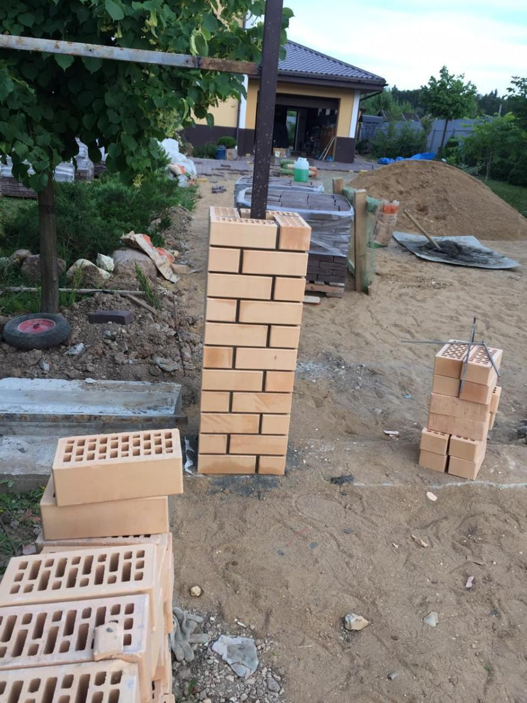
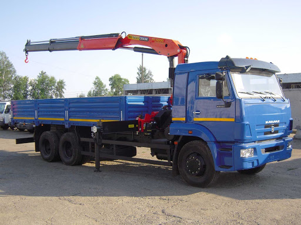
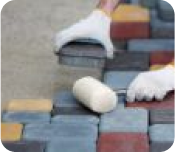

Наша компания - непревзойденный эксперт в укладке тротуарной плитки
в Воскресенском районе. Мы предлагаем безупречное качество и профессионализм
в каждом проекте, создавая привлекательные и прочные тротуары, которые
впечатляют и служат долгие годы. С нами вы получаете надежность,
высокие стандарты и мастерство, превосходящее ожидания.
+7 (985) 009 06-60
+7 (985) 009 06-60
rimplitka@gmail.com
Наши продукты
Добро пожаловать в удивительный мир тротуарной плитки! Откройте для себя, как красиво она выглядит,
пройдясь по нашим замощенным образцам. Погрузитесь в разнообразие цветовой гаммы нашей продукции,
где каждая плитка может стать выразительной и яркой точкой на вашей территории. Наши эксперты с
радостью помогут вам выбрать оптимальные варианты применения, расскажут о высоком качестве и
наилучших способах укладки. Если у вас уже есть размеры и план территории, мы сделаем предварительный
расчет, чтобы помочь вам планировать бюджет и стоимость работ по мощению. Не упустите возможность
превратить вашу территорию в прекрасное место с нашей тротуарной плиткой!
Добро пожаловать в удивительный мир тротуарной плитки! Откройте для себя, как красиво она выглядит,
...пройдясь по нашим замощенным образцам. Погрузитесь в разнообразие цветовой гаммы нашей продукции,
где каждая плитка может стать выразительной и яркой точкой на вашей территории. Наши эксперты с
радостью помогут вам выбрать оптимальные варианты применения, расскажут о высоком качестве и
наилучших способах укладки. Если у вас уже есть размеры и план территории, мы сделаем предварительный
расчет, чтобы помочь вам планировать бюджет и стоимость работ по мощению. Не упустите возможность
превратить вашу территорию в прекрасное место с нашей тротуарной плиткой
Тротуарная плитка вибропрессованная
Погрузитесь в мир красоты и инноваций с нашим журналом
"Тротуарная плитка вибропрессованная". Он предлагает широкий
спектр вдохновляющих дизайнов, передовых технологий и лучших
практик в области тротуарных покрытий. Наш журнал поможет
вам создать привлекательные, прочные и элегантные тротуары,
которые будут вызывать восхищение у всех, кто их увидит.
3
Тротуарная плитка вибролитая
Ваш незаменимый источник вдохновения - журнал "Тротуарная плитка
вибролитая". Он представляет передовые технологии и прекрасные дизайны
для создания прочных и эстетически привлекательных тротуаров. Уникальные
материалы и идеи воплощены в этом журнале, чтобы помочь вам создать уникальные и
восхитительные пространства на вашей территории.
3
Облицовочный камень
Исследуйте мир облицовочного камня с нашим журналом. Он предлагает
вдохновение и идеи для создания уникальных и привлекательных фасадов,
облицовок и ландшафтных проектов. Получите эксклюзивный доступ к самым
популярным стилям и трендам, чтобы создать великолепные и долговечные поверхности,
которые олицетворяют вашу индивидуальность и эстетический вкус.
3
Бордюрный камень
Исследуйте мир облицовочного камня с нашим журналом.
Он предлагает вдохновение и идеи для создания уникальных
и привлекательных фасадов, облицовок и ландшафтных проектов.
Получите эксклюзивный доступ к самым популярным стилям и трендам,
чтобы создать великолепные и долговечные поверхности,
которые олицетворяют вашу индивидуальность и эстетический вкус.
3
Ступеньки бетонные
Расширьте свои горизонты с нашим журналом о бетонных ступеньках.
Он предлагает вдохновение для создания элегантных и прочных ступеней,
добавляющих стиль и функциональность в любом пространстве. Наши рекомендации,
идеи и экспертные советы помогут вам выбрать и установить идеальные
бетонные ступени, которые прекрасно дополнят ваш дом или офис.
3
КРЫШКИ И КОЛПАКИ
Погрузитесь в мир крышек и колпаков с нашим
журналом. Он предлагает вдохновение и идеи для
создания стильных и функциональных решений для вашей
домашней и коммерческой среды. От уникальных дизайнов
до инновационных материалов, наш журнал поможет вам выбрать идеальные крышки
и колпаки, которые придают элегантность и защиту вашим объектам.
3
Калькулятор
Оставьте свои контактные данные, чтобы получить
дополнительную информацию и предложение на наши
услуги. Вас ждет приятный
бонус - скидка 5% на общую стоимость заказа.
Площадь для укладки (м2)
Тип основания:
Ваше имя
Ваше телефон
О Нас
С гордостью сообщаем, что компания "РИМ плитка" успешно
работает с 2004 года, предоставляя высококачественные строительные
материалы для благоустройства территорий. Мы специализируемся на изготовлении
и продаже тротуарной плитки в широком ассортименте. Наше портфолио включает
более 40 моделей, варьирующихся по форме, цвету и рисунку,
чтобы удовлетворить самые разнообразные потребности и предпочтения наших клиентов.
У нас в штате имеются опытные инженеры, которые проведут
точные расчеты и разработают комплекс необходимых работ,
учитывая ваши предпочтения. Наш отдел
снабжения займется закупкой и доставкой всех необходимых материалов на объект.
Наши работы

Доставка и оплата

Доставка тротуарной плитки, брусчатки и бордюров
производится манипуляторами компании “РИМ ПЛИТКА”.
Погрузка и разгрузка тротуарной плитки входит в
стоимость доставки. Перевозка тротуарной плитки
манипулятором – это удобно, быстро и экономично.
На доставке работают только
машины собственного парка с опытными водителями.
работа за этапом
1
ПОСТАНОВКА ЗАДАЧИ
Начните благоустройство вашего участка с разработки проекта, где будут указаны все постройки, дорожки, парковки и т.д. При составлении проекта обратите внимание на следующее:
1) Заложите закладные детали под мощением, если планируются инженерные системы.
2) Выберите форму, размер, толщину и способ укладки плитки в зависимости от предполагаемой нагрузки.
3) Уделите особое внимание системе водоотвода. Затем приступайте к работе по укладке плитки.
2
ЗЕМЛЯНЫЕ РАБОТЫ
Земляные работы начинаются с выставления геодезических отметок,
определяющих решение о насыпи или откопке грунта (чаще встречается).
Важный аспект - сохранение верхнего плодородного слоя (8-10см) для
дальнейшего использования при насаждениях. Излишний грунт после
откопки вывозится. Глубина выборки зависит от типа почвы (песок, суглинок)
и предполагаемой нагрузки на покрытие. Обычно для пешеходных зон 25-35см, для автомобильных
- от 35см. Дно площадки должно быть выровнено и утрамбовано (с использованием виброплиты или катка).
3
УСТАНОВКА БОРДЮРОВ
Бордюр выполняет важную роль в качестве надежной опоры для
тротуарной плитки, а также разделяет проезжую часть
от тротуаров и газонов. В зависимости от назначения
и размеров, выделяются дорожные, тротуарные и шарнирные
бордюры (для закругленных участков). Все бордюры устанавливаются
на бетонный раствор и фиксируются с обеих сторон в "бетонный замок".
Существует два варианта соединения бордюров с покрытием: либо
они находятся на одном уровне с покрытием, либо расположены выше покрытия (это применяется при перепаде высот).
4
МОНТАЖ СИСТЕМЫ ВОДООТВОДА
При благоустройстве участка важно обратить внимание на
сбор и отвод ливневых вод с покрытия. Правильно спроектированная система
водоотвода предотвращает образование луж, наледи и продлевает срок службы
покрытия. Существуют два вида водоотвода: линейный (с использованием водоотводных лотков)
и точечный (с дождеприемниками и подземным трубопроводом). Вода отводится по материалам
системы водоотведения, таким как пластик, бетон и полимербетон. Для улучшения водоотведения
могут применяться оба вида. Установка системы водоотвода
требует обозначения мест установки, соблюдения уклона и правильного герметизирования стыков между лотками.
5
УСТРОЙСТВО ОСНОВАНИЯ
Качество и долговечность покрытия зависят от тщательной
подготовки основания. Укладка тротуарной плитки или
асфальтобетона производится на двух типах основания:
бетонном и песчано-щебеночном. Бетонное основание
применяется на объектах с высокой транспортной нагрузкой,
но его стоимость достаточно высока. Песчано-щебеночное основание,
состоящее из песка и щебня, является более распространенным. На уплотненный
грунт укладывается геотекстиль для укрепления и дренажа. Затем следует
слой песка, который выравнивает поверхность и создает подушку для основания
(толщина слоя зависит от качества почвы). Подготовка основания включает
использование речного или карьерного песка, свободного от глины, камней
и растительных корней. На утрамбованный песок укладывается щебень,
который принимает нагрузку и обеспечивает дренаж. Качество и
прочность покрытия зависят от выбора качественного щебня.
В дорожном строительстве применяются различные виды щебня: известняковый,
гравийный и гранитный. Гранитный щебень обладает лучшими характеристиками,
но является самым дорогим. Толщина слоя щебня определяется нагрузкой
(от 12 до 15 см для тротуаров, от 20 см для проезда автомобилей).
Крупность щебня также зависит от назначения покрытия, обычно используется
фракция 5-20 мм. Для строительства автодорог применяется фракция 20-40 мм.
Слой щебня должен быть тщательно утрамбован. На верхний выравнивающий
слой отсыпается пескосмесь толщиной 4-6 см, которая может быть готовой
смесью или изготовленной из песка и цемента. Поверхность пескосмеси
выравнивается при помощи правила. На этом этапе основание считается готовым для укладки тротуарной плитки.
6

УКЛАДКА ТРОТУАРНОЙ ПЛИТКИ
Укладка тротуарной плитки начинается с
выбранной точки, используя резиновый
молоток (киянку) для аккуратных ударов
по плитке. Чтобы обеспечить равномерное распределение цвета, плитки
берутся из разных палет. Прямолинейность швов проверяется каждые 3 ряда.
Каждые 3-5 квадратных метров уложенной плитки поверхность контролируется
с помощью правила или уровня. После укладки плитки поверхность тщательно
утрамбовывается виброплитой до сухости и чистоты. Затем на поверхность насыпается
сухой чистый просеянный песок, который заполняет швы и связывает все покрытие.
Для заполнения швов не рекомендуется использовать пескосмесь, чтобы избежать
сложностей с ее удалением с поверхности. По окончании этих работ укладка тротуарной
плитки считается завершенной! Некоторые рекомендации: - укладку плитки следует
выполнять только в сухую погоду; - в зимний период для снижения скольжения поверхность
можно посыпать песком (не рекомендуется использование соли, чтобы избежать повреждений
покрытия); - для очистки от льда и снега необходимо избегать использования металлических инструментов,
чтобы предотвратить повреждение поверхности; - при загрязнении плитки ее можно просто вымыть обычной водой.